1
Physical foundations
Fire history, fuels, weather, and terrain jointly drive spread. Machine-learning inputs are rasterized proxies for those processes.
How physical drivers, satellite observation limits, benchmark contracts, baselines, and missing-data research define the scope of the project.
Before proposing a model, the student must understand which scientific assumptions, labels, baselines, and evaluation choices already define the task.
Fire history, fuels, weather, and terrain jointly drive spread. Machine-learning inputs are rasterized proxies for those processes.
Next Day Wildfire Spread, WSTS, WSTS+, and TS-SatFire do not all use the same target label.
Rules, U-Net variants, temporal models, Transformers, and reconstruction-before-forecasting are all relevant comparisons.
The real question is whether validity, quality, and observation age remain useful under a strict forecast-time contract.
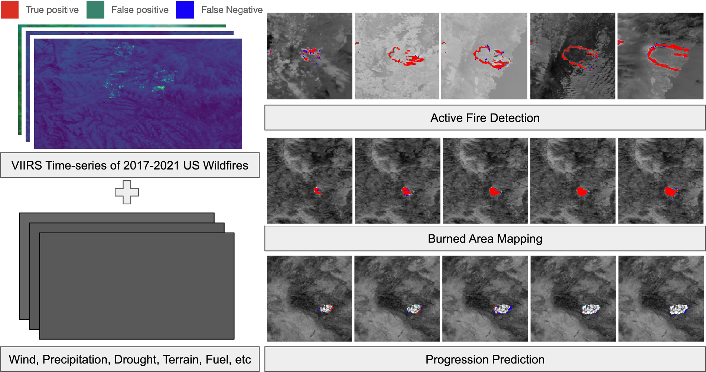
Fire spread is a coupled physical process. Public datasets expose only partial, rasterized representations of that process.
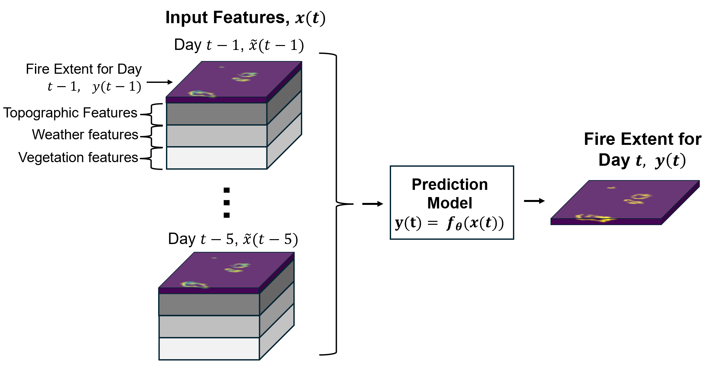
The current active-fire or burned-area pattern conditions where spread can occur next.
Fuel type, amount, structure, and moisture influence combustibility.
Wind speed and direction, humidity, and temperature affect rate and direction of spread.
Slope, aspect, and elevation affect fireline movement and local airflow.
Physical and semi-empirical simulators provide useful intuition and baselines, but they are not equivalent to the WSTS/WSTS+ next-day prediction task.
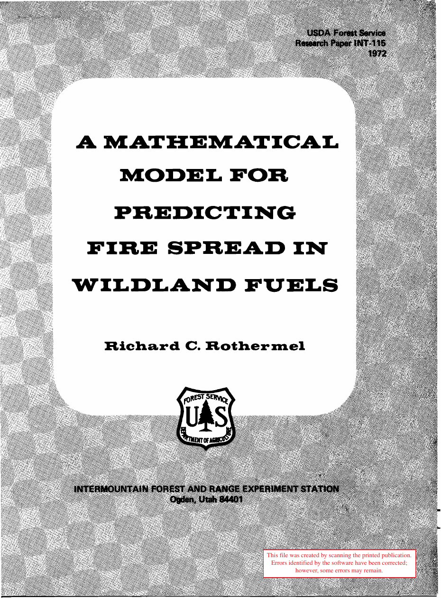
A mathematical model for rate of spread and fireline intensity in wildland fuels, with fuel and environmental parameters at its core.
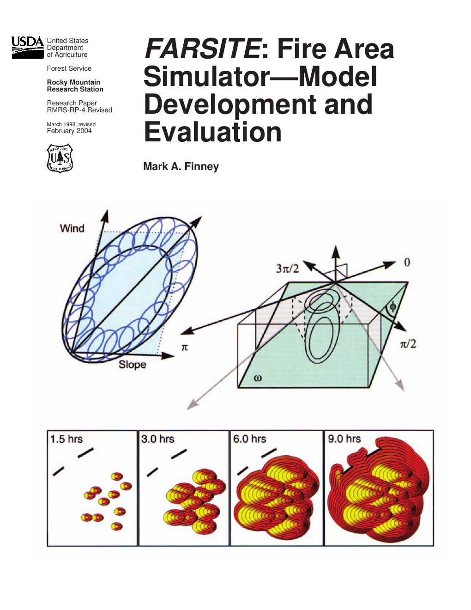
A two-dimensional fire-growth simulator integrating surface fire, crown fire, spotting, acceleration, and fuel-moisture components.
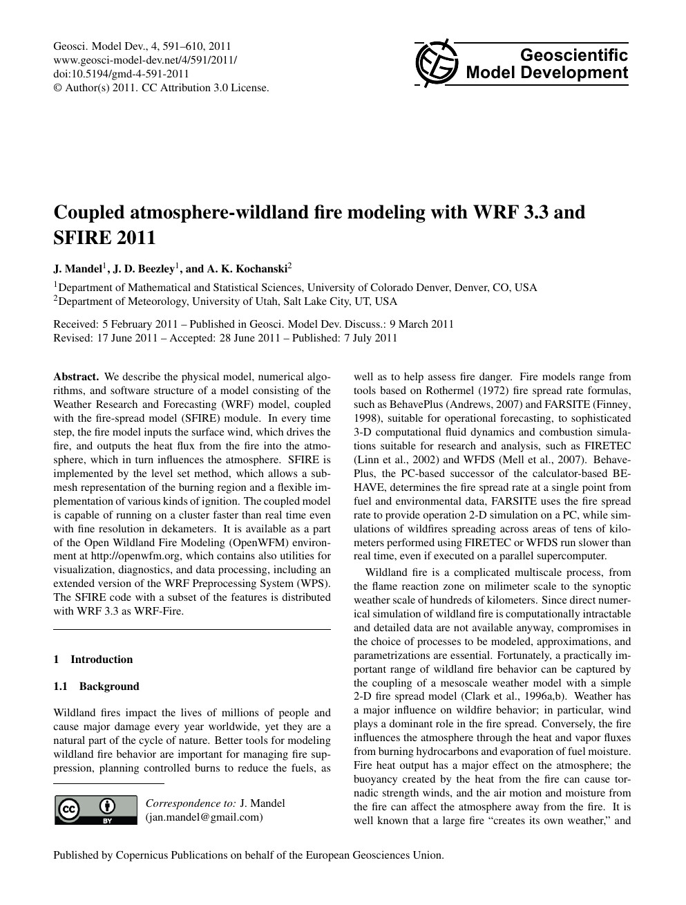
The fire model receives surface winds and returns heat flux to the atmosphere, creating two-way fire–atmosphere coupling.
Active-fire detections, burned-area products, smoke, cloud, and acquisition time have different semantics.
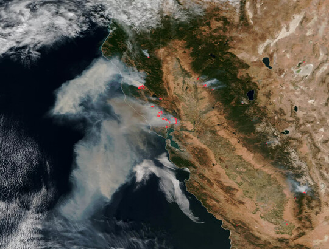
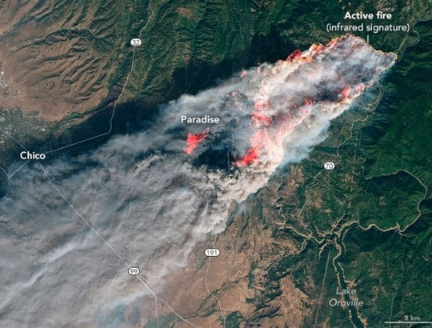
A thermal anomaly detected by a sensor at a particular acquisition time.
The area already burned over a defined interval; its time meaning differs from active-fire detection.
Obscuration can create missing, noisy, or low-confidence observations.
Observations labelled with the same date may still have different within-day acquisition times.
For the public WSTS/WSTS+ benchmark, use preceding calendar-day windows to predict a VIIRS active-fire proxy in the next UTC calendar-day window.
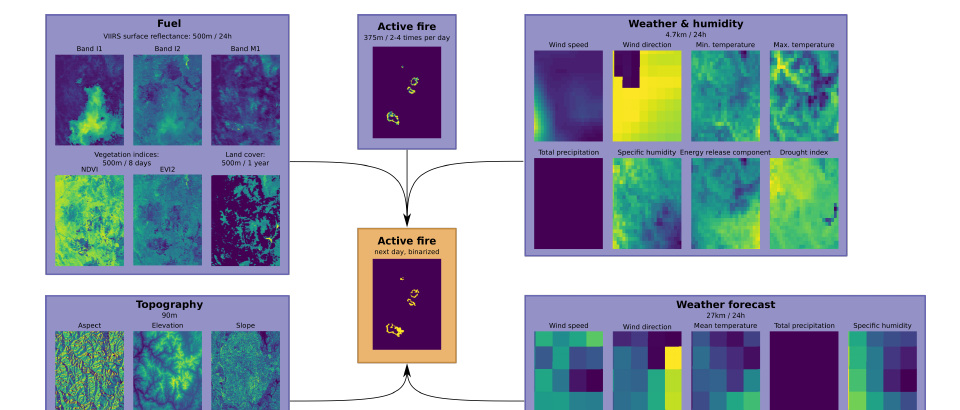
Observation and availability times must be audited where recoverable. Without that lineage, describe the work as a retrospective benchmark rather than an operational forecast.
WSTS/WSTS+ active-fire maps and TS-SatFire newly burned areas cannot be merged as if they were the same target.
Retain official folds for comparison, then use a frozen 2016–2020 train, 2021 validation, and 2022–2023 untouched test split.
The datasets form a useful research lineage, but they are not interchangeable.
Established a machine-learning benchmark for one-day-ahead wildfire spread prediction from remote-sensing variables in the United States.
Introduced multimodal time series with 607 wildfire events, 13,607 images, and 23 channels for next-calendar-day active-fire forecasting.
A multitask time-series dataset whose progression task uses 162 events and predicts the next-day increment of a cumulative active-fire/NIFC burned-area proxy.
Extends the WSTS benchmark across more years and geographic coverage. The project card lists 2016–2023, 1,005 events, and 24,462 images.
| Dataset | Main target | Role in this project | Important limit |
|---|---|---|---|
| Next Day Wildfire Spread IEEE TGRS 2022 | Next-day fire spread proxy | Task origin and benchmark context | Single-day formulation; later time-series benchmarks change the input contract. |
| WildfireSpreadTS / WSTS NeurIPS 2023 | Next-day VIIRS active-fire map | Task definition, channels, and public baselines | Active-fire detections are proxy labels, not complete fire perimeters. |
| WSTS+ WACV 2026 | Next-calendar-day active-fire proxy | Primary dataset for cross-year experiments | The public release does not adequately retain per-modality acquisition/availability time, original QA, or an explicit coverage mask. |
| TS-SatFire Scientific Data 2025 | Next-day increment of a cumulative burned-area proxy | Separate cross-label stress test | Its results must not be pooled with WSTS or described as same-task external validation. |
Class imbalance and observation quality often dominate benchmark behaviour more than architecture size.
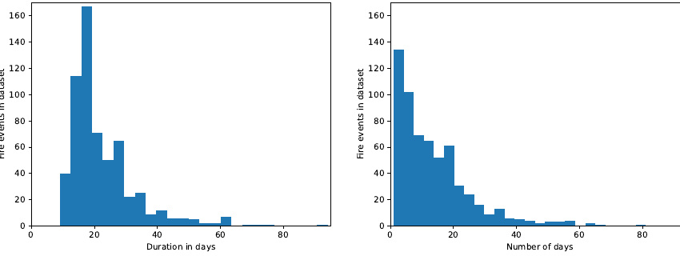
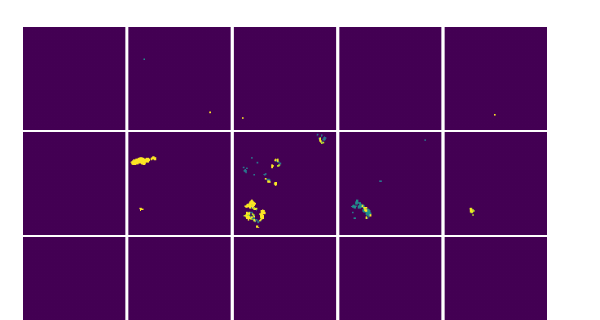
Every comparison should use the same event split, input channels, history length, forecast horizon, and training budget.
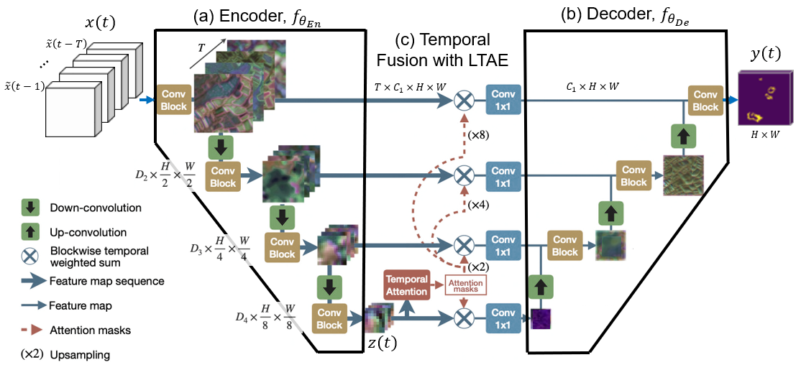
No-fire · persistence · morphological dilation
Test whether the model exceeds simple assumptions about fire continuation.
U-Net · Res-UNet
Provide the minimum reproducible learned baseline.
UTAE · ConvLSTM · temporal stacks
Test whether additional history truly helps.
SegFormer · Swin-Unet
Offer a strong representation comparison under a controlled budget.
Reconstruction → forecasting
The closest baseline family for corrupted fire observations.
Concatenate + mask
The essential comparison for testing whether observation age adds value beyond availability.
Cloud, smoke, sensor artefacts, product latency, and acquisition schedules create structured missingness and temporal misalignment.
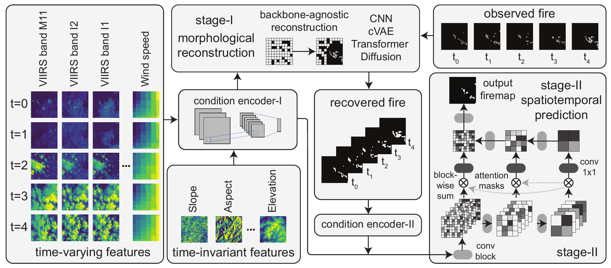
Cloud, smoke, and sensor artefacts can affect both input availability and label quality.
Satellite products, weather forecasts, and fire detections are not guaranteed to align in time.
The latest valid observation becomes less current as the interval to forecast issue time grows.
QA and confidence variables may be used only when their provenance is documented in the data package.
Two direct priors bound the claim: reconstruction-before-forecasting under corrupted observations, and modality-aware expert fusion for next-day spread prediction.
The proposed study does not only reconstruct fire maps. It explicitly tests q, Δt, mask, and modality identity across asynchronous multimodal inputs.
Direct sources: Yang et al. 2026, Robust Wildfire Forecasting under Partial Observability preprint; Andrianarivony and Akhloufi 2026, FireEx peer reviewed.
These studies supply design patterns and comparison methods. They do not establish the final wildfire-forecasting claim.
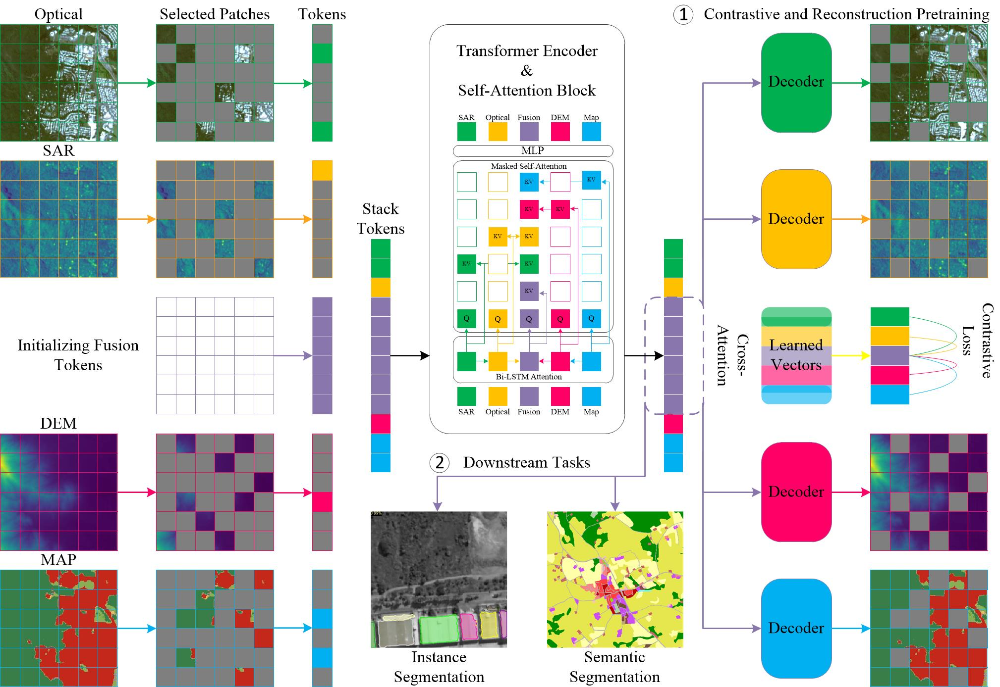
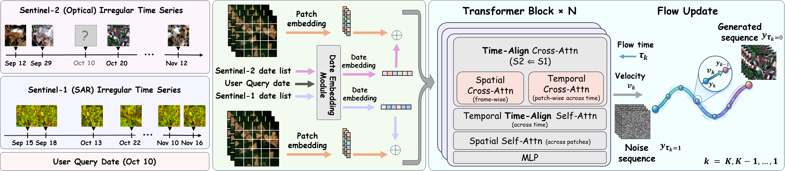
Studies performance loss when modalities are absent during training or inference, using fusion tokens, masked attention, reconstruction, or contrastive objectives.
Chen, Zhao, and Bruzzone 2024 peer reviewed
Targets Sentinel-1/2 cloud removal and reconstruction at arbitrary times through timestamp-conditioned alignment and asynchronous fusion.
Fallah et al. 2026 CVPR Workshops
Existing work covers the component ideas. The contribution must be tied to a strict forecast-time setting and tested as a narrow hypothesis.
| Dimension | Existing foundation | Boundary this project must add |
|---|---|---|
| Task | Public benchmarks already cover next-day active-fire prediction and burned-area progression. | Fix the next-UTC-calendar-day active-fire proxy contract and state explicitly why active-fire and burned-area labels cannot be merged. |
| Data | WSTS/WSTS+ provide multimodal time-series inputs and public baselines. | Audit timestamps, QA, validity, and sensor or product delay field by field to prevent future-information leakage. |
| Method | U-Net, UTAE, Transformers, and reconstruction-before-forecasting already exist. | Test a lightweight gate using q, Δt, mask, and modality ID against a matched concatenate-plus-mask control. |
| Evaluation | Average precision, F1, IoU, and leave-one-year-out protocols are established. | Use a frozen future holdout, paired event bootstrap, FSS, calibration diagnostics, matched corruption masks, and negative controls. |
Read the task-defining papers before adapting methods. Each reading block should produce a concrete project artefact.
Read Huot, WSTS, WSTS+, and TS-SatFire. Audit observation time, availability time, validity, QA, target validity, ROI provenance, and split rules. Produce data_manifest.csv and an explicit continue/pivot decision by day 14.
Run no-fire, two persistence variants, Res18-U-Net, UTAE(Res18), concatenate-plus-mask, LOCF, and uniform fusion. Fix the split, history length, seeds, corruption masks, and training budget.
Read the partial-observability, FireEx, AnytimeFormer/AGFlow, and incomplete-multimodal papers. Adapt reconstruction-first plus one reliability-fusion control; keep the comparison budget fixed.
End the related-work section with the exact project distinction: quality and observation-age fusion under a forecast issue-time constraint.
The project is valuable only if the claim stays narrower than the ideas it builds upon.
q, observation age, and validity improve next-calendar-day active-fire proxy forecasting.Next section: Research questions and hypotheses H1/H2/H3.
Peer-reviewed papers, official research reports, dataset pages, and clearly labelled preprints.